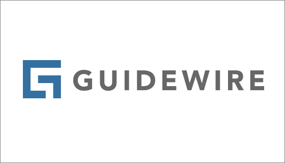

A proficient Software Engineer and an Experienced IT Professional with 4 years’ experience,
with excellent problem-solving and communication skills. Innovative and multi-faceted technical experience.
Smart enthusiastic and very passionate about technology.
 Jan 2023 - Present
Jan 2023 - Present
software Engineer
• Successfully developed and tested new software releases aimed at resolving client-reported
issues, ensuring timely and effective bug fixes based on client data analysis.
• Proficiently integrated software components to create a comprehensive and fully functional
software system, ensuring seamless functionality and optimal user experience.
• Developed flowcharts, layouts, and documentation to meticulously identify requirements and
propose solutions, enabling clear communication and effective collaboration among project
stakeholders.
• Consistently deliver exceptional software solutions that significantly enhance customer experiences.
May 2022 - November 2022
software Consultant Engineer

• Implemented new features and enhanced existing functionalities on the Guidewire Policy Center.
platform for Pekins Insurance, resulting in improved user experience and increased platform efficiency.
• Resolved defects related to insurance policy lifecycle management on Policy Center for Pekins
Insurance, ensuring smooth and error-free policy processing and management.
• Modified forms and content generation on Guidewire Policy Center for Pekins Insurance,
resulting in enhanced usability and streamlined document creation for insurance policies.
• Engaged in proactive communication with customers by participating in calls to thoroughly
understand their business requirements, ensuring effective alignment between technology
solutions and customer needs
September 2021 - MAy 2022
Software Support Engineer

• Analyze the incident, research solutions, and provide solid answers easily understood by
customers.
• Troubleshooting complex problems and provide the best available solution or
workaround within the agreed service levels agreement.
• Document solutions to known issues and consulting questions.
• Managed and corrected Client data as well as made data queries in SQL at the request of
the client.
• Maintained, fine-tuned, and optimized system architecture through outstanding expertise
in application installation, configuration, integration, and administration.
• Liaising with product management to identify and report bugs.
April 2021 - September 2021
Help Desk Support Engineer

• Worked as part of a team to make sure daily targets were met.
• Monitor and respond quickly to incoming requests relate to IT issues.
• Maintain computer systems and act as support if any system goes down.
• Responsible for deploying, configuring, and support operating systems on desktop
and mobile.
• Resolve product or service problems by clarifying the customer's complaint,
determining the cause of the problem.
• Handling complaints in a fast-paced environment
• Opening and closing of complaints after solution has been found.